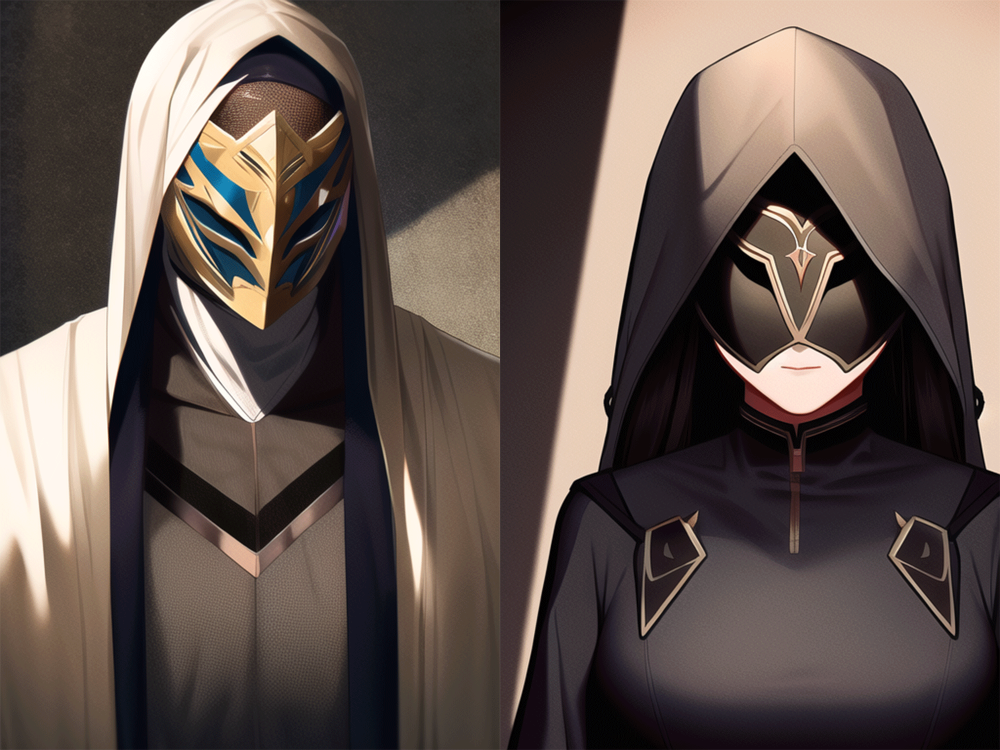
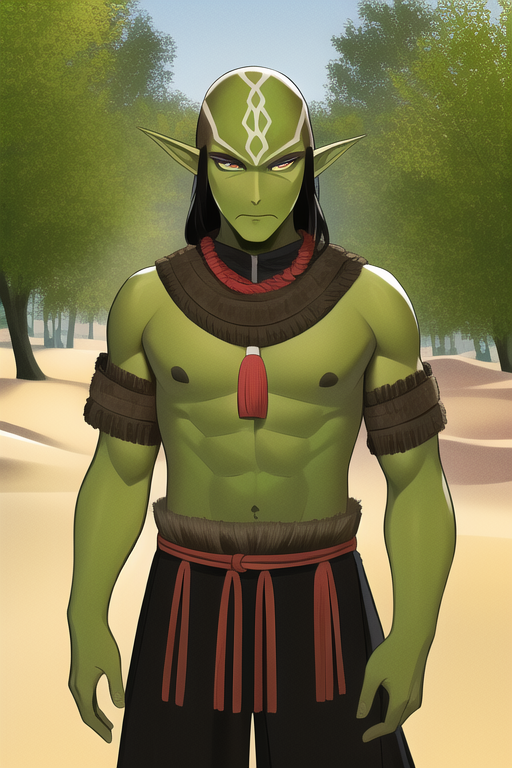
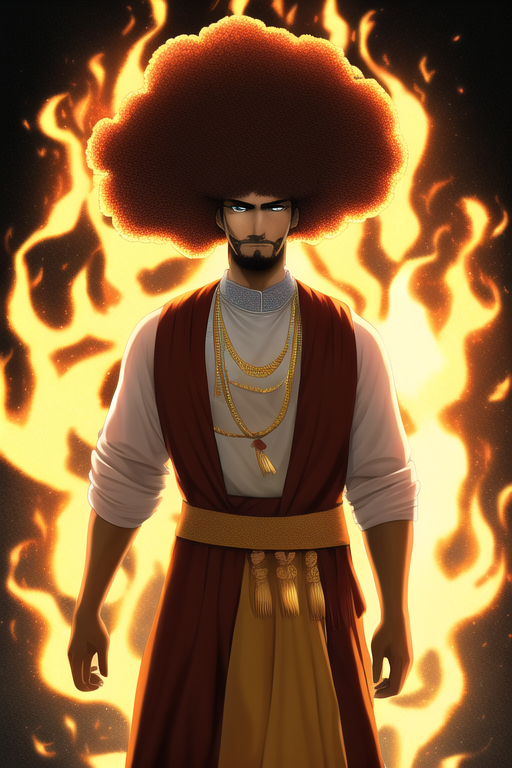
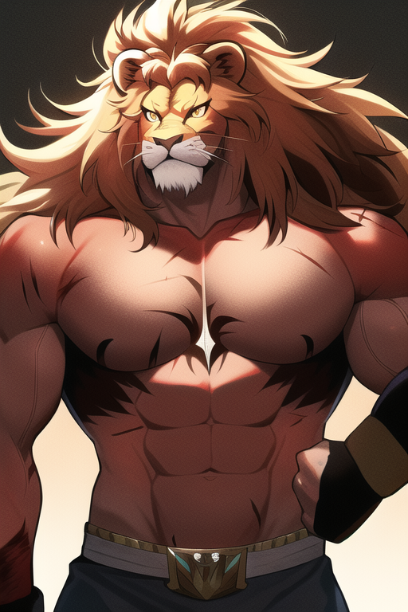
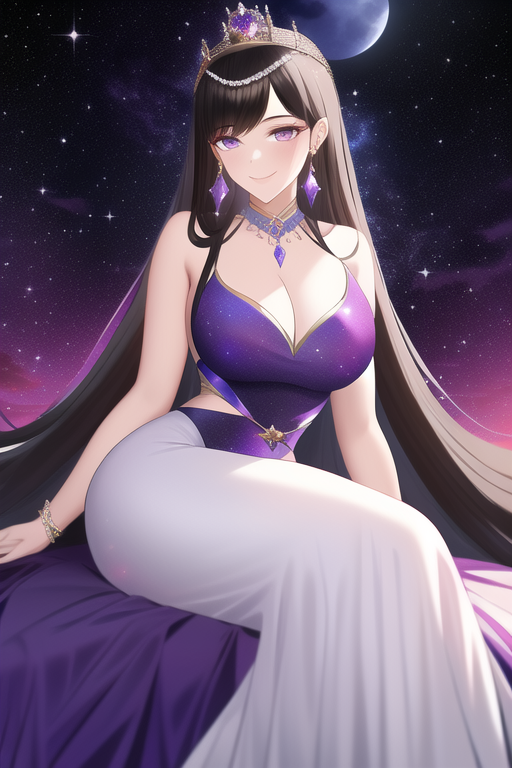
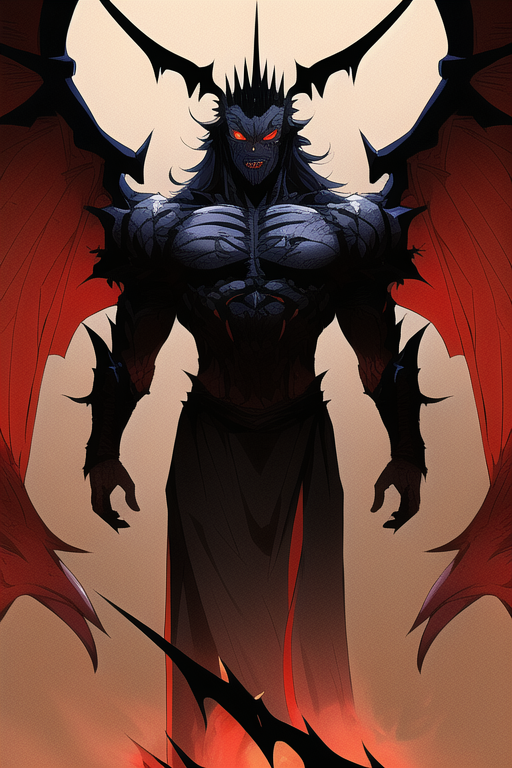
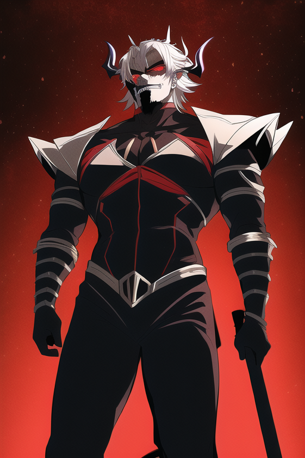

Gameplay
| The gameplay consists mostly of exploration, although some battles occur along the way. The combat system uses a turn-based format, which may seem slow paced compared to games these days, but it is easier for newer gamers to learn. There are different game modes available aside from story as well! |
Multiplayer Modes
| VS. Mode & Arena Mode | Mission Mode | Free-Roam Mode |
| Play Vs. Mode where you can battle AI controlled opponents, either alone or cooperatively or play Arena Mode, which provides players with a local and online PvP multiplayer experience like no other. | Play Mission Mode allows you to replay stages you have already cleared with friends. Play them multiple times to earn more experience points, money, items, etc., and also unlock unique events and minigames. | Play Free-Roam Mode gives you unlimited access to the entire world map and lets you freely move about wherever you please, and is great for trying out the various skills, weapons, armor, and assist characters the game has to offer. |
Story
In the story mode you play as your own custom character and explore the continent of Fiora to save the world from the clutches of the Demon King, who wants to rule over the continent. After defeating him however, he leaves behind his minions known as the Dark Legion. Your job is then to defeat the Dark Legion, which will lead you into completing the final mission to complete the game. Battles are usually fought between two characters (you choose which one) by selecting abilities. These abilities come in three types: Physical Attack, Magic Attack, and Support.
Characters






×

tetst
To aid you on your quest, Al joins your party. He is a nimble theif with some magic spells at his disposal to set traps for enemies. His skills are focused around stealth and trickery, using his poison ability to take down foes silently. He can also use a bow and arrow, though he prefers to use his poison darts. He carries a dagger, which he uses to stab foes, or as a melee weapon.
Due to Mr. Miracle's hometown being a caldera of a dormant volcano, he has a very strong fire and earth affinity in magic. This allows him to control and manipulate the earth, such as controlling the flow of lava or even creating small earthquakes. He's also quite skilled at controlling and manipulating wind with his flames. All this makes him an incredibly powerful mage, especially since he's not very experienced. To aid on you journey, Mr. Miracle's powerful explosion-type attacks have a boosted chance of burning enemies caught in the blast. And if he gets hit by a fire-based attack, his HP will be healed. But don't worry, that's why we're here!
The Beast King also has a special relationship with the Queen of Fiora, as they were childhood friends. After hearing you are aiding her, he will tag along in certain missions throughout the story. The Beast King is a beast type character, so you have to provide an opening for him to get some damage in. His attacks are powerful, but also slow and unrefined. Make sure to take this into account when joining him on the battlefield! He is also aided by his trusty wolf companion named Koma. Koma is a three legged wolf that can transform and grow massive in size at will. It is unclear if it is actually Koma's body that changes, or if the transformation is only happening to its fur. Koma is very loyal to the Beast King and will be there to protect him from all enemies, even those that are not in the same battle.
Durmia's history with the player begins when she invites you to visit her castle. You agree and arrive at the castle, only to find that Durmia has been kidnapped by a group of adventurers. They claim they want to make her their queen, but the truth is something else entirely. The adventurers intend to trade her to the Demon King for a large sum of money. If the Demon King gets Durmia, he will able to rule the world! Aided by your party, the player will encroach on the Demon King's territory, and try to save the queen! Will Queen Durmia be safe? What will happen? Find out by playing the main story!
The Demon King's goal is to rule the world, and he doesn't care who gets in his way. He is extremely powerful, and he has no qualms about using his power to get what he wants. His army is massive, and he has a great deal of support from the citizens of the surrounding countries. He is a tyrant, and the people hate him. The Demon King wants to rule the world, but he also has a secret goal that may not be so noble.
The Demon King's second in command is a human named Volkan. He is a sorcerer with the power to control and manipulate shadows. He is a master of darkness, and he is extremely skilled at controlling shadows. He is an expert at illusion magic, and he can create illusions that are nearly impossible to see through. He is also a master of the dark arts, and he is a very dangerous enemy.